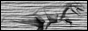
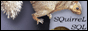

Home | FAQ | Documentation | Links | License | Project Info | Download | News | Bugs | Forums
Thanks
Related technologies
Tools
|  | DataDino Database Explorer is a low-cost commercial JDBC-based database management tool that comes with built-in support for a variety of databases. The support for MS SQL Server is provided by jTDS. Jerason Banes, the developer of DataDino is also a member of the jTDS Project. |
|  | SQuirreL SQL Client is an open source graphical Java program that will allow you to view the structure of a JDBC compliant database, browse the data in tables, issue SQL commands etc. SQuirreL SQL is also hosted by SourceForge and it's one of the top Java projects on SourceForge. |
| DbVisualizer is a widely-used commercial database visualization and management tool based on JDBC. Among others, a nice thing about DbVisualizer is a diagram view of a database displaying tables and the foreign key relationships between them. | |
| DB Solo is a powerful yet affordable cross-platform database development and management tool for both developers and administrators. It allows users to explore and manage database objects as well as execute ad-hoc queries. DB Solo supports most operating systems and DBMS products. |
|
Project hosted by |
WebRing member |
Web Design Anca Sinpalean |